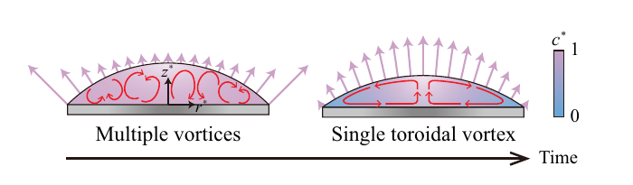
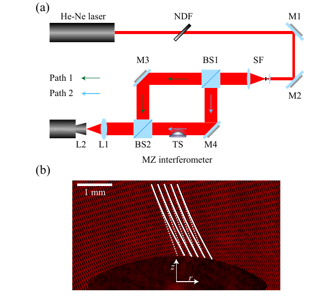
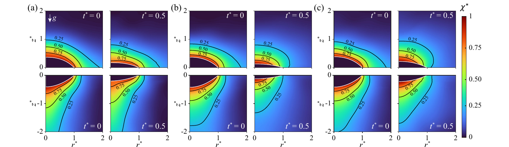
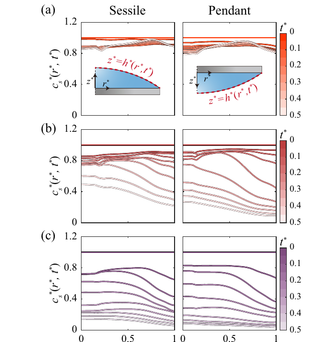
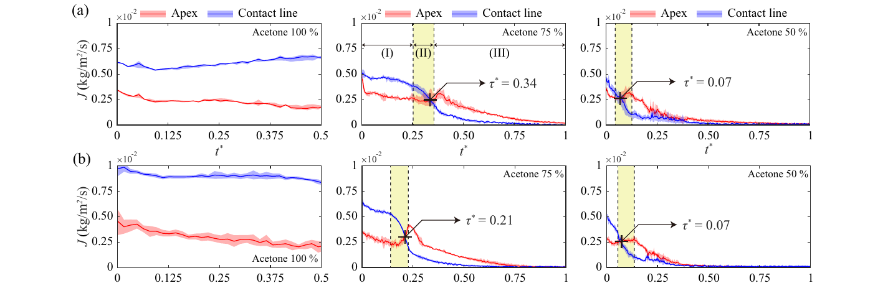
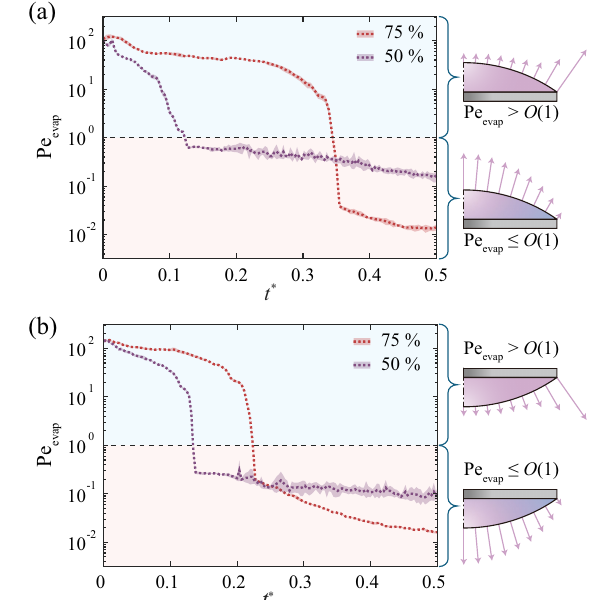
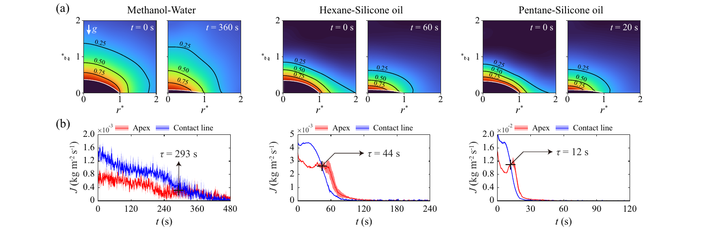

二元液滴的蒸发峰值为什么会从边缘移到顶点？
当内部流动来不及补充边缘的挥发组分时，界面组成会重新分布。实验中，蒸发峰值迁移与内部涡结构的重组同时出现。
Evaporative Flux Reversal of Binary Droplets: From Edge to Apex
先把这篇论文讲明白
经典咖啡环理论的几何直觉是：薄液滴的气相扩散在接触线附近形成通量奇异性，因此边缘始终蒸发最快。这个结论隐含一个关键前提——整个液气界面的饱和蒸气浓度 c_s 是空间常数。对单组分液滴，这个前提通常合理；对二元液滴，挥发性组分会在不同位置以不同速度被消耗，c_s 因而可能同时随位置和时间变化。
本文的贡献不是再次展示“二元液滴里有复杂流动”，而是直接测量液滴外部的挥发组分蒸气场，由此反演界面饱和浓度和局部挥发通量，并与液滴内部的 μ-PIV 流场对照。作者观察到：二元液滴早期仍然边缘通量较大；随后接触线附近的挥发组分被优先耗竭，边缘通量突然下降，而顶点通量相对保持；两者交叉后，最大通量转移到顶点。这个时刻又与内部多涡流衰减、单个环形涡形成相重合。
这项工作的真正物理含义是：多组分液滴的气相通量分布不是由几何一次性决定的固定边界条件，而是被界面组成和内部输运共同改写的动态边界条件。

- 回答的问题： 作者要检验的核心图景是什么？
- 图中证据或方法： 这是概念示意图，不是原始数据。左侧表示早期边缘通量较强、液滴内部存在多个 Marangoni 涡；右侧表示后期顶点通量占优、内部转为单个环形涡，颜色表示挥发性组分的归一化浓度。
- 支撑的结论： 论文把“通量最大值的位置变化”和“内部流动结构重组”视为同一演化过程的两个可观测侧面。
- 局限与读图注意： 图中的箭头不能证明因果方向，也不代表流速或通量的定量大小；真正证据来自 Figures 2–5 与 PIV 结果。
研究方法
样品和边界条件
- 代表体系为丙酮-水，初始丙酮体积分数为 100%、75% 和 50%。每滴体积
10 ± 0.5 μL。 - 液滴铺展并钉扎在半径
R = 2.5 mm、厚度1 mm的亲水石英圆片边缘，接触半径固定。 - 同时测试座滴和悬滴，以改变重力方向。初始接触角分别为
44° ± 1°和40° ± 1°。 - 环境为
22 ± 1 °C、相对湿度40% ± 5%。 - 丙酮完全挥发的时间
t_f：100% 丙酮为 75 s（座滴）/63 s（悬滴）；75% 为 186 s/242 s；50% 为 292 s/305 s。文中时间归一化为t* = t/t_f。
外部蒸气场与局部通量
作者使用 Mach-Zehnder 激光干涉仪记录丙酮蒸气引起的折射率场变化。处理链条为：干涉条纹 → 二维傅里叶相位 → 轴对称 Abel 反演 → 折射率 → 丙酮摩尔分数 χ(r,z,t) → 界面饱和浓度 c_s(r,t)。局部挥发通量由 Fick 第一定律并加入 Stefan 流修正得到。
这里最重要的建模改变是：经典模型把 c_s 当成常数，而本文允许并测得 c_s = c_s(r,t)。因此，即使几何项仍倾向于增强边缘通量，边缘处 c_s 的快速下降也可能压过几何奇异性。
内部流场
75% 和 50% 二元液滴中加入体积分数 0.003%、直径 2 μm 的荧光粒子进行 μ-PIV；焦平面位于石英基底上方 25 μm。这是近基底二维切片，不是整个液滴的三维速度场。

- 回答的问题： 局部蒸气浓度和通量是如何被测出来的？
- 图中证据或方法： (a) 展示 He-Ne 激光、分束器、空间滤波器、参考光路和穿过测试区的样品光路；(b) 给出真实干涉条纹，白实线相对虚线的偏移来自液滴周围折射率梯度。
- 支撑的结论： 论文不是根据液滴总失重反推一个平均通量，而是利用气相折射率场获得空间分辨的浓度，再重建局部通量。
- 局限与读图注意： 从条纹到通量需要轴对称、折射率-组成关系、局部气液平衡、理想气体与扩散模型等假设；Figure 6 证明测量原理和原始信号存在，不单独证明反演的绝对精度。
具体结果
结果 1：单组分蒸气场形状稳定，二元液滴边缘蒸气云随时间收缩

- 回答的问题： 二元液滴的气相浓度场是否仍像单组分液滴那样只由几何和扩散控制？
- 图中证据或方法： 上排为座滴、下排为悬滴；每组比较
t*=0与t*=0.5。纯丙酮的等浓度线形状前后相近；75% 和 50% 丙酮-水在中期都出现接触线附近浓度显著降低，而顶点附近的高浓度区域相对保留。 - 支撑的结论： 二元体系的蒸气场不仅整体变弱，而且发生空间重排；这一趋势对液滴朝向并不敏感，不能简单归因于重力使蒸气上浮或下沉。
- 局限与读图注意： 颜色按各时刻/条件的最大值归一化，主要适合判断等浓度线形状，不能仅凭颜色比较不同样品的绝对浓度；绝对/相对界面浓度变化要看 Figure 3。
结果 2：经典模型的核心前提在二元液滴中失效

- 回答的问题： 界面饱和蒸气浓度
c_s能否继续视为空间常数？ - 图中证据或方法： 每条曲线是某一时刻沿界面的
c_s*(r*,t*) = c_s(r*,t*)/c_s(r*,0)。纯丙酮在径向上基本平坦，只随时间整体略降；二元液滴曲线则在接触线方向急剧下弯，且后期更明显。座滴和悬滴均出现这一现象。 - 支撑的结论： 对丙酮-水液滴，选择性挥发造成接触线附近丙酮贫化，从而使
c_s成为空间和时间的函数；经典“均匀饱和浓度 + 几何边缘奇异性”的边界条件不再成立。 - 局限与读图注意： 纵轴对每个径向位置的初始值归一化，突出的是相对耗竭；图中并未直接给出液相界面浓度。作者通过局部气液平衡把气相界面值换算为饱和浓度，这一步含模型假设。
结果 3：最大通量确实从边缘越过顶点

- 回答的问题： “通量反转”是定性图像，还是可测的顶点-边缘交叉？它何时发生？
- 图中证据或方法： 红线为顶点区
0 < r* < 0.25，蓝线为接触线区0.75 < r* < 1。纯丙酮始终是蓝线高于红线；75% 和 50% 二元液滴先边缘占优，随后蓝线快速下降并被红线超过。每条实线为 3 次干涉实验的平均，阴影为最小-最大范围；黄色区间来自 PIV 的流型转变时间。 - 支撑的结论： 座滴 75% 的交叉时刻
τ*=0.34，悬滴 75% 为0.21；50% 的座滴与悬滴均约为0.07。初始挥发组分越少，边缘更快耗竭，反转越早；通量交叉与内部流型转变区间重合。 - 局限与读图注意： 这里比较的是两个有限径向区间的平均通量，不是数学意义上的单点极值；重复数仅
n=3，阴影是 min-max 而不是置信区间。时间重合支持耦合，但不等于单向因果证明。
结果 4：竞争关系可用挥发 Péclet 数概括
作者定义
Pe_evap = τ_evap / τ_flow = ρ_l w_bulk H U_avg / (J_avg R)，
其中 τ_evap 表示挥发耗竭时间尺度，τ_flow = R/U_avg 表示内部流动补给时间尺度。因而：
Pe_evap >> 1：流动补给比挥发耗竭快，局部贫化容易被抹平；Pe_evap < 1：挥发比补给快，接触线贫化得以持续并进一步压低边缘通量。

- 回答的问题： 为什么早期界面近似均匀，而后期会维持明显的边缘贫化？
- 图中证据或方法： 75% 和 50% 液滴在座滴、悬滴中都由约
O(10^2)的高Pe_evap快速下降到 1 以下；50% 体系更早跨越。数据由实验测得的平均流速和平均通量计算，阴影仍是 3 次实验的 min-max。 - 支撑的结论： 高
Pe_evap阶段，Marangoni 多涡流能快速补给边缘丙酮；流动衰减后Pe_evap < 1，挥发耗竭超过补给，界面浓度梯度变得持久，从而维持顶点占优的通量分布。 - 局限与读图注意： 这是作者构造的时间尺度比，不是传统仅以扩散系数定义的组分 Péclet 数。它把多个实验量组合在一起，因此“跨越 1”是有物理意义的判据，但误差会累积；附录的标度只给数量级解释。
关键机制：哪些是观察，哪些是解释
直接观察
- 二元液滴在中期出现接触线附近气相丙酮浓度显著降低（Figure 2）。
- 沿界面的归一化饱和浓度由近似均匀变为边缘强烈下降（Figure 3）。
- 边缘通量快速下降并被顶点通量超过，纯丙酮不发生这一交叉（Figure 4）。
- PIV 给出的多涡流到单环涡转变区间与通量交叉相重合；
Pe_evap同时由大于 1 降至小于 1（Figures 4–5）。
作者的机制解释
机制链可以写成：
边缘几何增强的选择性挥发 → 接触线附近丙酮优先耗竭 → 表面张力梯度与 Marangoni 多涡流逐渐难以维持 → 中心向边缘的组分补给变弱 → 边缘 c_s 与 J_edge 进一步下降 → J_apex > J_edge → 形成由既有体相浓度差驱动的单环涡。
作者进一步把早期多涡流解释为溶质 Marangoni 驱动，把后期单环涡解释为密度差驱动。附录 B 的数量级估算得到：早期 75%/50% 体系的理论流速约 15/13 mm s⁻¹，与实验最大速度 O(10 mm s⁻¹) 同量级；后期理论速度 1.1/1.4 mm s⁻¹，却明显高于实验的 O(0.01–0.1 mm s⁻¹)。这说明“后期流动显著变弱”的方向可信，但后期浮力标度的定量预测并不准确。
Figure 4 支持“通量反转与流场重组同步”，但实验没有通过外部扰动单独控制流场或界面浓度，因此还不能严格确定唯一因果方向。更稳妥的理解是一个相互反馈：界面耗竭改变表面张力和通量；流动衰减又削弱组分补给，使耗竭进一步加强。温度梯度、实际非理想活度、三维非轴对称结构以及接触角/高度变化，也可能参与转变；本文主要用方向反转、Péclet 时间尺度和跨体系一致性来排除“纯重力方向”与“纯几何边缘奇异性”两种简单解释。
跨体系验证

- 回答的问题： 通量反转是否只属于丙酮-水这一特殊体系？
- 图中证据或方法： 以挥发性组分初始体积分数 75% 测试甲醇-水、己烷-硅油（10 cSt）和戊烷-硅油（10 cSt）。三者的蒸气场都从边缘增强转为顶点相对增强，且顶点/边缘通量均发生交叉。
- 支撑的结论： 反转在多种“挥发性-非挥发性”二元组合中重复出现。交叉时间分别约为甲醇-水 293 s、己烷-硅油 44 s、戊烷-硅油 12 s，表明挥发性、黏度和表面张力-组成关系共同控制时间尺度。
- 局限与读图注意： 只有 3 个额外体系、同一初始体积分数和相近几何条件；这证明现象不局限于丙酮-水，却尚不足以建立跨材料的统一定量标度。甲醇-水曲线噪声较大，交叉时刻也更不尖锐。
适用范围与局限
- 局部通量不是直接探针读数。 它经过二维傅里叶、Abel 反演、折射率-浓度换算、局部气液平衡、Fick 定律和 Stefan 修正，系统误差可能相关。
- 轴对称是假设。 若早期 Marangoni 多涡流导致明显三维破缺，气相场的轴对称重建会平滑真实方位结构。
- PIV 只看近基底平面。 流场焦平面距基底 25 μm，不能完整恢复三维涡结构；“单环涡”主要依赖切片流向与作者的流型判断。
- 重复数较少。 Figure 4–5 的
n=3只给 min-max，没有统计置信区间，也没有对交叉时刻的不确定度做正式传播。 - 机制仍是耦合解释。 流型转变与通量交叉的时间重合很有说服力，但缺少独立操纵流动强度或表面张力梯度的因果实验。
- 参数空间有限。 主要样品是固定接触半径、约 40° 接触角、10 μL、室温空气中的挥发性-非挥发性二元液滴。滑移接触线、厚液滴、热基底、高湿度、强非理想溶液和含聚合物/颗粒体系是否保持同一序列，需要重新验证。
- 后期标度只能定性。 浮力驱动阶段的预测速度比实验高约 1–2 个数量级，说明物性随组成变化、黏性阻尼或几何收缩尚未被充分建模。
最终评价
这是一篇很强的“改边界条件”论文。它没有否定单组分咖啡环理论，而是指出其最容易被默认、却在多组分体系中最先失效的前提：界面饱和浓度并非常数。最有说服力的证据组合是 Figure 3 的界面浓度非均匀化、Figure 4 的定量通量交叉和 Figure 5 的补给-耗竭时间尺度转变；Figure 7 则把结论从丙酮-水推广到一小组挥发性-非挥发性二元液滴。
如果用于建模，最重要的不是照搬一个新的经验通量曲线，而是把液相组成输运、界面热力学和气相扩散闭合成动态耦合问题。如果用于涂布/结晶，最值得测的是反转发生在干燥和固化时间线的哪个位置。